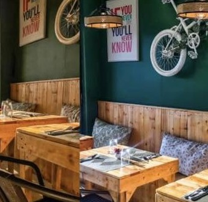

A place to feel at home
We believe every cup starts a conversation.
Storia means story—and the best ones are shared around a table.
A little about us
A neighborhood cafe with room for everyone.
Storia Cafe began with a simple idea: make a welcoming place where good coffee and thoughtful food bring people together. We work with local suppliers when we can, make our menu with care, and save a seat for whoever walks through the door.
Whether you’re here for a quick espresso, a long catch-up, or a quiet moment with a book, we’re glad you’re here.
See what’s brewing
Our promise
Made with care.
From carefully pulled espresso to warm pastries and satisfying meals, we believe small details make a big difference.
Our favorite thing
Time well spent.
A cafe can be more than a stop along the way. We want Storia to be a place where the day gets a little softer and every guest feels welcome.